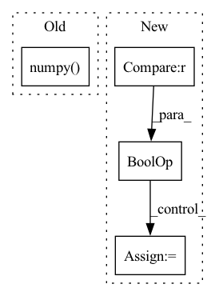

Pattern ID :22455
Before Change
working_window = deepcopy(sample_image.window)
if "full" in self.psf_mode:
working_window += self.target.psf_border
self.center_shift = self["center"].value.detach().numpy() % 1. // fixme only move window
working_window.shift_origin(self.center_shift)
working_image = Model_Image(pixelscale = sample_image.pixelscale, window = working_window)After Change
if sample_image is None:
sample_image = self.model_image
if self.is_sampled and sample_image is self.model_image :
return
if sample_image is self.model_image:
sample_image.clear_image()
//self.is_sampled = True
// Check that psf and integrate modes line up
if "window" in self.psf_mode:
if "window" in self.integrate_mode:
assert self.integrate_window_size <= self.psf_window_size
assert "full" not in self.integrate_mode
working_window = deepcopy(sample_image.window)
if "full" in self.psf_mode:
working_window += self.target.psf_border
center = self["center"].value.detach().numpy()
center_shift = center - np.floor(center/sample_image.pixelscale)*sample_image.pixelscale
if center_shift[0] < 0:
sub_window.shift_origin((-working_image.pixelscale,0))
center_shift[0] += working_image.pixelscale
if center_shift[1] < 0:
sub_window.shift_origin((0,-working_image.pixelscale))
center_shift[1] += working_image.pixelscale
working_window.shift_origin(center_shift)
working_image = Model_Image(pixelscale = sample_image.pixelscale, window = working_window)
if "full" not in self.integrate_mode:
working_image.data += self.evaluate_model(working_image)
if "full" in self.psf_mode:
self.integrate_model(working_image)
working_image.data = conv2d(working_image.data.view(1,1,*working_image.data.shape), self.target.psf.view(1,1,*self.target.psf.shape), padding = "same")[0][0]
working_image.shift_origin(-center_shift)
working_image.crop(*self.target.psf_border_int)
elif "window" in self.psf_mode:
sub_window = self.psf_window.make_copy()
sub_window += self.target.psf_border
center_shift = self["center"].value.detach().numpy() - sub_window.center //fixme, make center on a pixel, not necessarily central pixel ((0.5 + self["center"].value.detach().numpy()/self.target.pixelscale) % 1.)*self.target.pixelscale
if center_shift[0] < 0:
sub_window.shift_origin((-working_image.pixelscale,0))
center_shift[0] += working_image.pixelscale
if center_shift[1] < 0:
sub_window.shift_origin((0,-working_image.pixelscale))
center_shift[1] += working_image.pixelscale
sub_window.shift_origin(center_shift)
sub_image = Model_Image(pixelscale = sample_image.pixelscale, window = sub_window)
sub_image.data = self.evaluate_model(sub_image)
// plt.imshow(sub_image.data.detach().numpy(),origin = "lower")
// plt.title("evaluate model")
// plt.show()
self.integrate_model(sub_image)
// plt.imshow(sub_image.data.detach().numpy(),origin = "lower")
// plt.title("integrate model")
// plt.show()
sub_image.data = conv2d(sub_image.data.view(1,1,*sub_image.data.shape), self.target.psf.view(1,1,*self.target.psf.shape), padding = "same")[0][0]
// plt.imshow(sub_image.data.detach().numpy(),origin = "lower")
// plt.title("convolve")
// plt.show()
sub_image.shift_origin(-center_shift)
// plt.imshow(sub_image.data.detach().numpy(),origin = "lower")
// plt.title("shift")
// plt.show()
center_shift = torch.zeros(2)
sub_image.crop(*self.target.psf_border_int)
// plt.imshow(sub_image.data.detach().numpy(),origin = "lower")
// plt.title("crop")
// plt.show()
working_image.replace(sub_image)
// plt.imshow(working_image.data.detach().numpy(),origin = "lower")
// plt.title("working image")
// plt.show()
else:
self.integrate_model(working_image)
sample_image += working_image
if sample_image is self.model_image:
self.is_sampled = True
def integrate_model(self, working_image):
Sample the model at a higher resolution than the given image, thenIn pattern: SUPERPATTERN
Frequency: 3
Non-data size: 4
Instances Fragment ID: 71019625
Project Name: connorstoneastro/autoprof
Commit Name: 084f9ab029cf4881c16a7d0a6a652ae00264aa04
Time: 2022-11-03
Author: connorstone628@gmail.com
File Name: autoprof/models/model_object.py
M Class Name: BaseModel
N Class Name: BaseModel
M Method Name: sample(2)
N Method Name: sample(2)
M Parent Class: AutoProf_Model
N Parent Class: AutoProf_Model
M File Name: autoprof/models/model_object.py
N File Name: autoprof/models/model_object.py
M Start Line: 129
M End Line: 170
N Start Line: 129
N End Line: 208
Before Change
y, feature = net(x)
// make score and link map
score_text = y[0,:,:,0].cpu().data.numpy()
score_link = y[0,:,:,1].cpu().data.numpy()
// Post-processing
boxes, polys, mapper = getDetBoxes(score_text, score_link, text_threshold, link_threshold, low_text, poly, estimate_num_chars)After Change
return new_state_dict
def test_net(canvas_size, mag_ratio, net, image, text_threshold, link_threshold, low_text, poly, device, estimate_num_chars=False):
if isinstance(image, np.ndarray) and len(image.shape) == 4 : // image is batch of np arrays
image_arrs = image
else: // image is single numpy array
image_arrs = [image]
img_resized_list = []
// resize Fragment ID: 71019619
Project Name: jaidedai/easyocr
Commit Name: 78be56f87d091dfcea6d2289948fc86cc7188cf7
Time: 2021-06-12
Author: samhunsadamant@gmail.com
File Name: easyocr/detection.py
M Class Name: AnonimousClass
N Class Name: AnonimousClass
M Method Name: test_net(10)
N Method Name: test_net(10)
M Parent Class:
N Parent Class:
M File Name: easyocr/detection.py
N File Name: easyocr/detection.py
M Start Line: 26
M End Line: 58
N Start Line: 25
N End Line: 71
Before Change
original_predictions = self._original_predictions
// handle only first image (batch=1)
predictions_in_xyxy_format = original_predictions.xyxy[0].cpu().detach().numpy()
object_prediction_list = []
// process predictionsAfter Change
// compatilibty for sahi v0.8.15
if isinstance(shift_amount_list[0], int):
shift_amount_list = [shift_amount_list]
if full_shape_list is not None and isinstance(full_shape_list[0], int) :
full_shape_list = [full_shape_list]
// handle all predictions
object_prediction_list_per_image = [] Fragment ID: 71019618
Project Name: obss/sahi
Commit Name: 248cd2df7d3450eea48c0f03b75d1b7d0111dcf4
Time: 2021-12-19
Author: 34196005+fcakyon@users.noreply.github.com
File Name: sahi/model.py
M Class Name: Yolov5DetectionModel
N Class Name: Yolov5DetectionModel
M Method Name: _create_object_prediction_list_from_original_predictions(3)
N Method Name: _create_object_prediction_list_from_original_predictions(3)
M Parent Class: DetectionModel
N Parent Class: DetectionModel
M File Name: sahi/model.py
N File Name: sahi/model.py
M Start Line: 470
M End Line: 509
N Start Line: 433
N End Line: 484